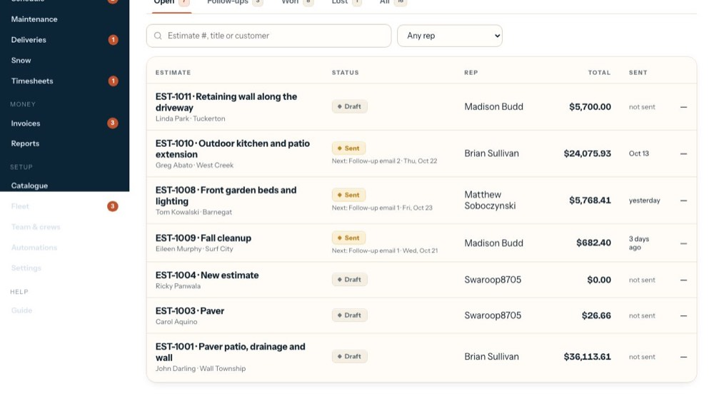
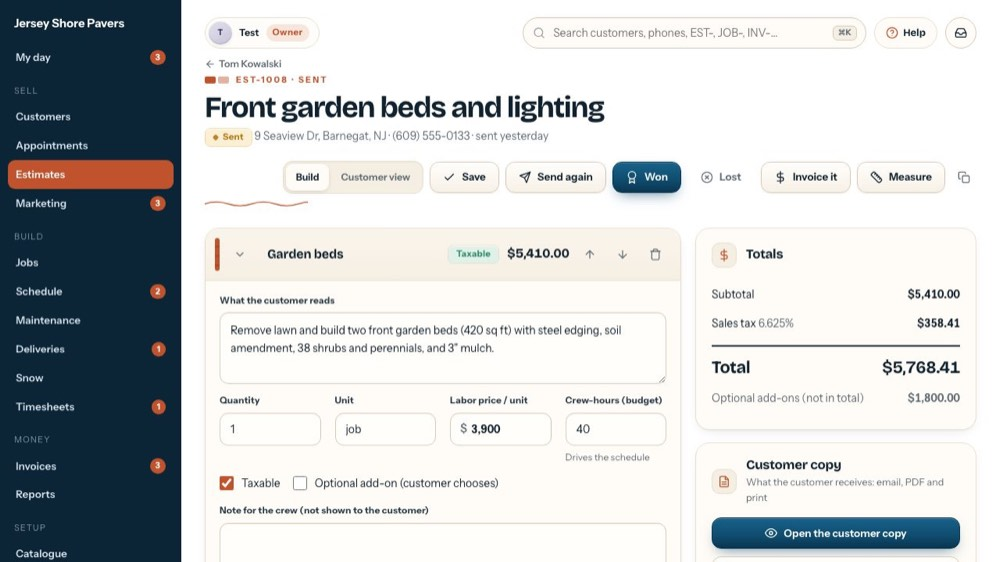
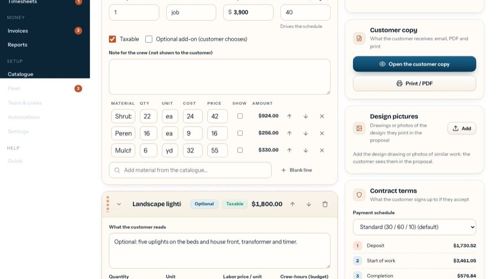
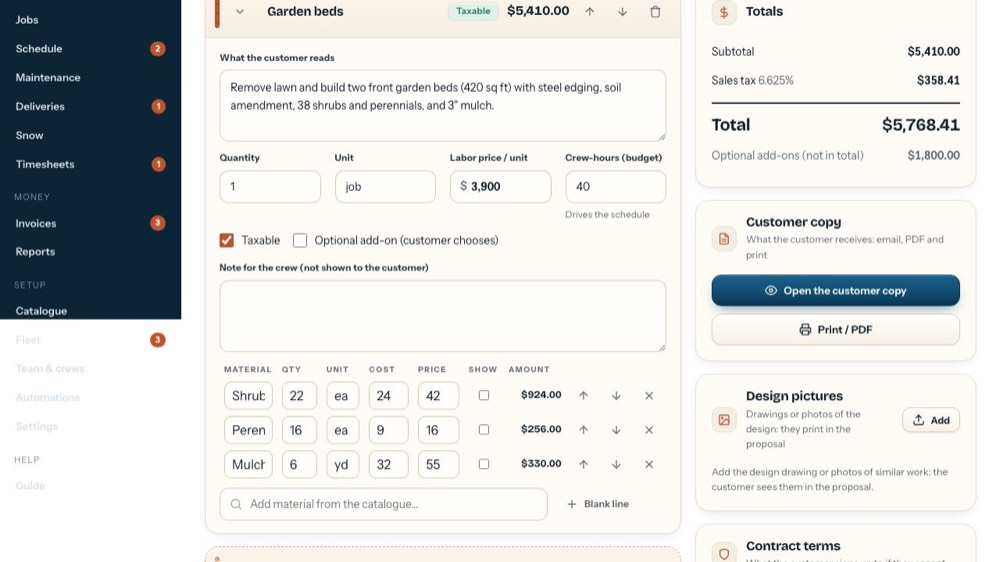

Invoice an estimate in one click (small jobs, cleanups)
In the office app, press Help and type invoice an estimate in one click
: the tour plays on your own screen, with your own data.
-

1Open the estimate
A small job or a cleanup that's done? Open its estimate.
-

2Invoice it
Marks the estimate won, so the job is made and commission and job costing follow it, then makes a draft invoice for the whole amount, line by line as the customer saw it. You check the draft, then email or print it. On a won estimate the green banner has Invoice the job.
-

3Design pictures
Drawings or photos of the design. Add puts them in the proposal under Your design, with a caption if you like.
-

4The customer copy
Open the customer copy shows the A4 pages exactly as the customer gets them. Print or PDF prints them, or saves a PDF to attach.